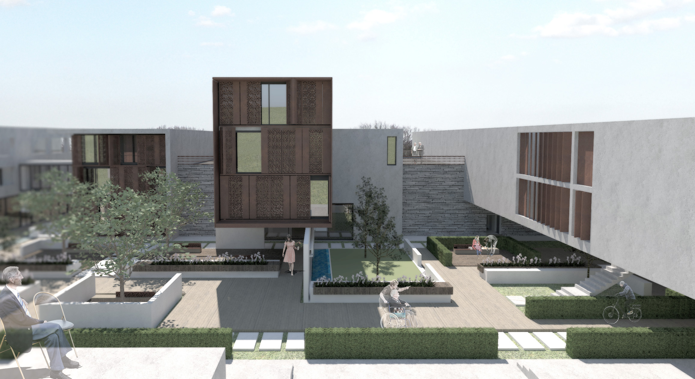

Mémoire de la Ville.
Maison de Repos | Sainte-Marguerite
Projet de BASHANDY TAALAB Hamza
Faculté d'Architecture de l'Université de Liège.
Atelier: DANS ET HORS LES MURS.
Année académique 2017 - 2018.
